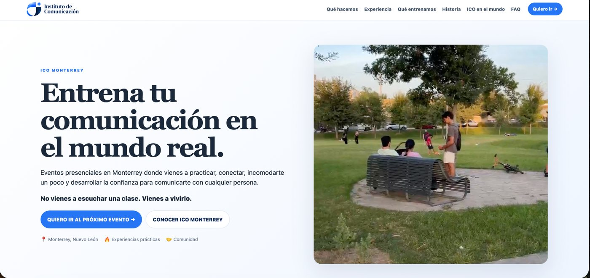
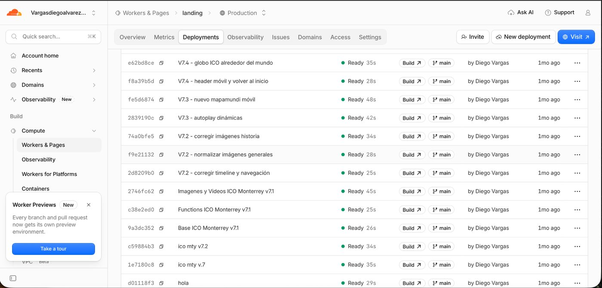
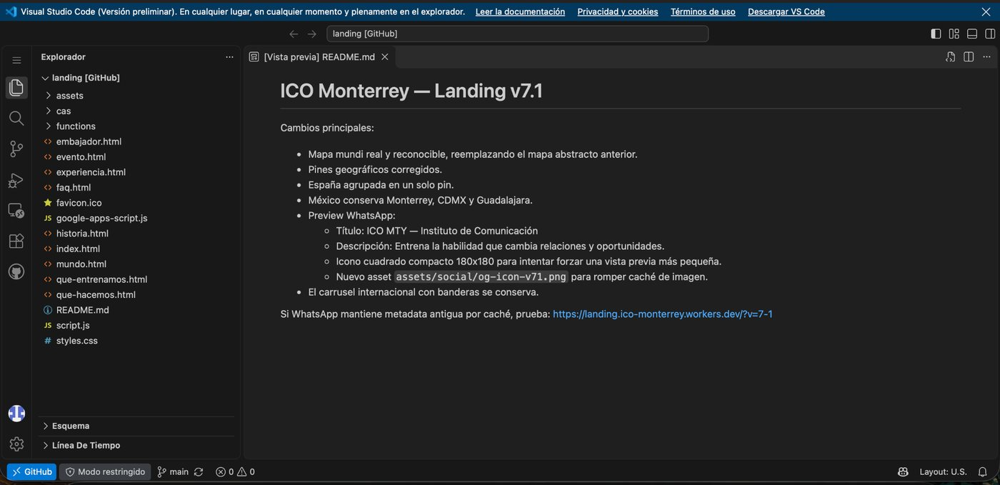

Landing page de
ICO Monterrey
Diseñé y desarrollé una página web para explicar con claridad qué hacemos en ICO Monterrey, mostrar la experiencia de los eventos y concentrar en un solo lugar la información y el registro.
El problema que quería resolver
Antes de la landing, explicar ICO Monterrey dependía demasiado de mensajes por WhatsApp, Instagram y conversaciones individuales. La gente podía quedarse con dudas sobre qué hacíamos, cómo eran los eventos o cómo participar.
Crear un lugar donde una persona pudiera entender ICO, ver cómo se vive un evento y saber cómo registrarse sin depender de una explicación personal.
Realicé la idea, estructura, textos, selección de fotos y videos, diseño, decisiones de UX, programación con apoyo de IA, GitHub, Cloudflare, formulario y pruebas en móvil.
De una primera versión a un sitio real
La primera versión terminó siendo solo el inicio. La página cambió muchísimo conforme la probaba, encontraba errores y recibía feedback.
Definir
Decidí qué debía entender una persona que nunca había escuchado de ICO.
Diseñar
Organicé páginas, navegación, textos, fotografías, videos, botones y experiencia móvil.
Construir
Desarrollé HTML, CSS y JavaScript con apoyo de IA y organicé el proyecto en GitHub.
Publicar
Aprendí a desplegar el sitio mediante Cloudflare y a mantener una versión pública funcional.
Probar
Revisé constantemente computadora y celular; surgieron problemas de formatos, peso de archivos y diseño responsive.
Mejorar
Apliqué feedback de mis papás y corregí detalles de claridad, navegación, estética y cantidad de texto.
Lo difícil fue seguir corrigiendo
Lo más complicado no fue conseguir una primera página funcional. Fueron todos los pequeños detalles posteriores: archivos demasiado pesados, formatos que daban problemas, elementos que se veían bien en computadora pero no en celular, errores de publicación y secciones que necesitaban simplificarse.
Hubo momentos en los que me frustré y quise dejarlo. El proceso se volvía tardado porque cada corrección parecía revelar otro detalle. Aun así, seguir corrigiendo fue justamente una de las partes donde más aprendí.
Nuevas habilidades
El proyecto me obligó a aprender mucho más que solamente “hacer una página”.
Una herramienta que ya puedo usar
El proyecto dejó de ser únicamente una idea y se convirtió en un sitio disponible en internet.
La información de ICO Monterrey ahora está organizada y puede entenderse sin una explicación individual.
La comunidad cuenta con una presentación digital mucho más visual y consistente.
La página permite dirigir a las personas hacia la información del siguiente evento y su registro.
Resultados aplicados
Fortalezas y áreas de mejora
Identifiqué fortalezas en la creación, estructura y comunicación visual, pero también la necesidad de simplificar más y eliminar información innecesaria.
Desafíos y habilidades nuevas
Desarrollé habilidades técnicas y de diseño que no tenía al comenzar y resolví problemas reales de funcionamiento y publicación.
Iniciar y planificar
Partí de un problema concreto, definí un objetivo y organicé contenido, páginas, versiones y un proceso de mejora.
Compromiso y perseverancia
Continué trabajando aun cuando las correcciones repetitivas y los errores técnicos hicieron que el proyecto se volviera frustrante.
Del proceso al resultado publicado
Estas evidencias pertenecen únicamente a mi experiencia de Creatividad.



Todavía no lo considero terminado
Si tuviera más tiempo, seguiría reduciendo texto y refinando algunos elementos para que la experiencia sea todavía más rápida, clara y concisa. Este proyecto también me enseñó que un sitio real puede seguir evolucionando después de publicarse.